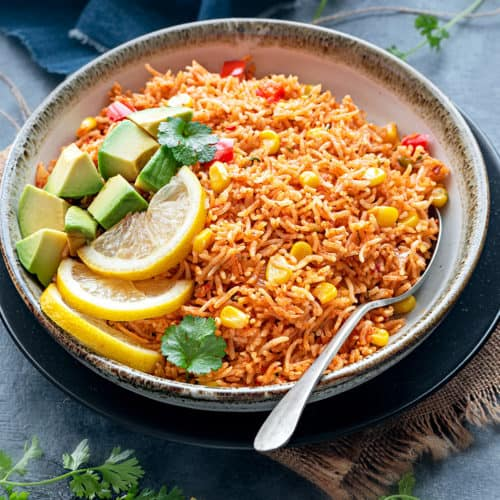

Mexican Rice

Description
Mexican rice (sometimes referred to as Spanish rice or red rice in Tex-Mex cuisine), also known as arroz a la
Mexicana, arroz Mexicano, or arroz rojo in Mexico, is a Mexican side dish made from white rice, tomato, garlic,
onion, and perhaps other ingredients. Mexican rice is almost always eaten as a complement to other dishes such as
mole, refried beans, rotisserie chicken, carne asada, picadillo, tacos, fried fish, fried chicken, chiles rellenos
or vegetable soup.
Mexican-style rice is especially popular in central and northern Mexico and the southwestern United States. It is
eaten year-round and is one of the most common preparations in Mexican cuisine.
Ingredients
- 2 tbsp oil
- 1 cup basmati rice (rinsed)
- ½ onion (finely chopped)
- 1 tomato (chopped)
- ½ capsicum (chopped)
- 2 tbsp carrot (chopped)
- 2 tbsp corn
- 2 tbsp peas
- 3 clove garlic (finely chopped)
- 2 cup veg stock / water
- 1 tsp pepper (crushed)
- ½ tsp salt
- 2 tbsp coriander (finely chopped)
Steps
- firstly take 2 tbsp olive oil and roast 1 cup basmati rice. make sure to rinse basmati rice well and drain off
the water
- roast on low flame for 5 minutes or till nutty aroma comes and rice turns golden brown
- now add ½ onion, 1 tomato, ½ capsicum, 2 tbsp carrot, 2 tbsp corn, 2 tbsp peas and 3 clove garlic
- saute for 2 minutes, or till vegetables shrink slightly
- further, add 2 cup veg stock or use water. to prepare veg stock to refer yakhni pulao recipe
- also add 1 tsp pepper, ½ tsp salt and mix well
- get the water to a boil on high flame
- now cover and simmer for 20 minutes or till rice is cooked completely
- after 20 minutes, stir the rice gently without breaking rice grains
- turn off the flame, cover and rest for 5 minutes before serving
- finally, mexican rice recipe is ready to serve with lemon and coriander
Back to Home